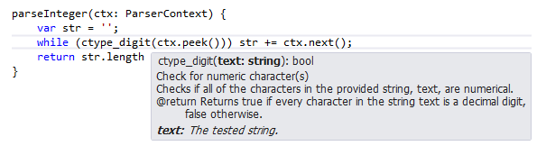

Pratphall is an optionally-typed language that compiles to readable PHP. PHP has a powerful engine and is very scalable since state is primarily per-request for PHP scripts. Unfortunately, due to the dynamic nature of PHP, it can be difficult to build large projects and retain the ability to refactor and manage the code. It can also be difficult to foresee errors with typing and unavailable variables. Almost all of these issues cause many problems that don't surface until runtime. Pratphall aims to solve this.
Pratphall started as kind of a joke (hence the name) and proof of concept to see if TypeScript could be reliably translated. It turns out it can. So Pratphall is for all practical purposes just TypeScript (which is a typed superset of JavaScript) cross-compiled. And although not every single JS idiom directly translates, remembering that Pratphall is just TypeScript which is just typed JavaScript will help development greatly.
//normal array
var arr = [1, 2, 3, 4, 5];
//loop and print
arr.forEach((value: number) => {
echo('My value: ' + value + '\n');
});
//compile-time-only class
interface SampleContract extends Pct.CompileTimeOnly {
requiredProperty: string;
optionalProperty?: bool;
}
//function using compile-time class
function printInfo(info: SampleContract) {
echo('Required: ' + info.requiredProperty + '\n');
if (typeof info.optionalProperty !== 'undefined') {
echo('Optional: ' + info.optionalProperty + '\n');
}
}
//type inferred matching
printInfo({ requiredProperty: 'required val' });//normal array
$arr = [1, 2, 3, 4, 5];
//loop and print
foreach ($arr as $value) {
echo('My value: ' . $value . "\n");
}
/*Spacing added in example for clarity*/
//function using compile-time class
function printInfo($info) {
echo('Required: ' . $info->requiredProperty . "\n");
if (array_key_exists('optionalProperty', $info)) {
echo('Optional: ' . $info->optionalProperty . "\n");
}
}
//type-inferred matching
printInfo((object)[ 'requiredProperty' => 'required val' ]);To use Pratphall from the command line, simply install via NPM:
npm install -g pratphall
You may also want to install TypeScript for Visual Studio 2012 if you want to use Visual Studio as your editor. For more information about Visual Studio support, see below.
If you want to build Pratphall from source, see the Building From Source appendix.
Write the following simple script and save it as sayHello.ts:
function sayHello(subject: string) {
return 'Hello, ' + subject;
}
var theSubject = 'World';
echo(sayHello(theSubject) + '\n');Now, to compile to PHP, run ppc like so:
ppc sayHello.ts
This will create a sayHello.php file that looks like this:
function sayHello($subject) {
return 'Hello, ' . $subject;
}
$theSubject = 'World';
echo(sayHello(theSubject) . "\n");Running this with PHP will output what you expect. However, if you tried to compile this:
function sayHello(subject: string) {
return 'Hello, ' + subject;
}
var theSubject = 123;
echo(sayHello(theSubject) + '\n');
You would get: sayHello.ts(7,5): Supplied parameters do not match any signature of call target. This is because you are attempting to pass a number to a function that only accepts strings.
Nobody really. It's a project that was started in my spare time and only maintained in my spare time. There is no commercial support, no guarantee that anything will get fixed, and no guarantee that the project will be properly maintained. The only project known to use Pratphall is dust-php. If Pratphall becomes popular, it is possible it could become a more professional language. Feel free to discuss the language or ask questions on the mailing list.
Pratphall is TypeScript compiled to PHP. It includes several helpers to make this easier. Pratphall's code is licensed under the MIT license, but the Microsoft TypeScript code within (referenced as a submodule) is licensed under the Apache 2 license.
The source is on GitHub and the site is on GitHub. Follow development, fork, send pull requests, and submit issues there.
I don't know. It's in an almost alpha state until it gets more traction.
This is basically for static typing enthusiasts that use PHP either because they are forced to or like the PHP engine and scalability. Using PHPDoc annotations is rarely a good enough solution and editor support for them is limited. After noticing extreme parity between TypeScript and PHP, a simple tool was built to do the cross-compiling. This is the result.
Pratphall can be used to make a really scalable codebase in PHP. It can also reduce verbosity (e.g. several classes/modules in one file) and increase productivity through editor support (e.g. Visual Studio with IntelliSense). Refactoring and determining use throughout the your codebase will now be really easy. And, if the abstraction is written properly, code can even be shared between JS/PHP. At the very least this really helps when defining typed model classes.
Pratphall simply leverages the TypeScript compiler and type checker. Because TypeScript is written so well, it is very easy to change the language it emits to. In this case, a new emitter was written to just write PHP instead of JavaScript.
ppc [options] FILE...
Options:
-c, --config FILE--exclude-outside--ext FILE--force-block--function-brace-newline-h, --help--indent-spaces COUNT--indent-tabs--lint--no-comments--no-js-lib--no-organize--no-php-lib--no-type-hint-o, --out PATH--single is present or there is only a single file on the command line, this is the single file to output to. References in the file are emitted relative to this single file path when not using --single. Otherwise, this is the directory to put all files at relative to the files given.--prefer-single-quotes--require-references///<reference /> will become require_once. This is only allowed when --no-organize is set.--single--no-organize also, so both cannot be present.--type-brace-newline--use-else-if--verbose-w, --watch--single this means files and directories created during compilation may be deleted on later compilation. Files are not overwritten if their output contents didn't change. Finally note this does not always work over remotely mounted filesystems.--watch-debounce-ms MSBooleans and conversions happen the same way in Pratphall as they do in PHP.
Strings in Pratphall and PHP are somewhat similar. There are no multiline strings. There is no string interpolation (attempts are escaped). Usually, the preference of single quote or double quote in the Pratphall script is translated verbatim to PHP. However, if there is an escape character in a single-quoted string, it will become double quoted. To request that all strings without escape characters to become single quoted in PHP, use the --prefer-single-quotes compiler option.
In Pratphall strings are concatenated with a plus sign. In PHP the dot operator is used. Type inference is used to determine when this translation should occur. In Pratphall, if either side of the plus operator is a string, concatenation is assumed. If either side of a plus operator is an unknown/any type a normal arithmetic plus will be used and a compiler warning will be issued.
Normal JavaScript string functions are translated to common PHP idioms with some gotchas.
//will be converted to double quotes
var a = 'My\nNewline\nString$escaped{$interpolation}';
//concatenation
var b = 99 + ' bottles of beer on the wall';
//compiler warning because type is any
var c: any = 'test string';
var d = 12 + c;
//common JS functions
var_dump(b.length);
var_dump(b.charAt(0));
var_dump(b.split(' '));//will be converted to double quotes
$a = "My\nNewline\nString\$escaped{\$interpolation}";
//concatenation
$b = 99 . ' bottles of beer on the wall';
//compiler warning because type is any
$c = 'test string';
$d = 12 + $c;
//common JS functions
var_dump(strlen($b));
var_dump($b[0]);
var_dump(explode(' ', $b));In JS there is no difference between an integer and a float for the most part, and the same is true in Pratphall. Conversion and testing can still occur at runtime with intval, floatval, and other methods. At compile time however, they are simply numbers. There is no normal way to constrain a variable on one type or the other. Hexadecimal and octal literals are translated to normal decimal integers during translation.
Unlike PHP, Pratphall differentiates between associative arrays and normal indexed arrays. The former is of type Pct.PhpAssocArray whereas the latter is a normal JS array. This can be confusing at first, but in practice it helps the developer make more accurate assumptions about the typing of variables. You can convert between these types at compile time using Pct.toAssocArray or Pct.toArray. Note when using the latter, (until TypeScript has generics) the result is any[] so it is recommended to cast it to the exact form of array expected.
Associative arrays can be created with Pct.newAssocArray. Only object literals can be passed to the function. Indexed arrays are handled almost exactly like they are in JS. They are created with the normal bracketed syntax.
Normal JavaScript array functions are translated to common PHP idioms with a few gotchas.
//regular array
var a = [1, 2, 3];
//some calls
a.forEach((value: number) {
var_dump(value);
});
a.push(4);
//associative array
var b = Pct.newAssocArray({
prop: 'propValue',
prop2: ['a', 'b', 'c'],
closure: function () { echo('Hey!\n'); }
});
//some calls
var c = b.map((value: any) => {
return gettype(value);
});
c['prop3'] = 15;
var_dump(c.length);//regular array
$a = [1, 2, 3];
//some calls
foreach ($a as $value) {
var_dump($value);
}
$a[] = 4;
//associative array
$b = [
'prop' => 'propValue',
'prop2' => ['a', 'b', 'c'],
'closure' => function () { echo("Hey!\n"); }
];
//some calls
$c = array_map(function ($value) {
return gettype($value);
}, $b);
$c['prop3'] = 15;
var_dump(count($c));Objects in Pratphall and PHP work very similarly. Anonymous object literals become an stdClass via cast. Note, if you have a closure as an object property, it cannot necessarily be invoked like a method in PHP, so Pratphall has to do special handling (see GOTCHA-001). TypeScript property accessors are not currently supported.
var obj = {
num: 12,
arr: ['a', 'b', 'c'],
obj: { innerNum: 12 },
func: (value: string) => { echo('Value: ' + value); }
};$obj = (object)[
'num' => 12,
'arr' => ['a', 'b', 'c'],
'obj' => (object)[ 'innerNum' => 12 ],
'func' => function ($value) { echo('Value: ' . $value); }
];PHP resources are represented by the Pct.PhpResource type in Pratphall.
Null is handled the same way in Pratphall and PHP.
Undefined is different. In Pratphall, delete translates directly to unset. Conditions that check typeof undefined are translated to safe PHP that avoids false positives with NULL values unlike isset.
Functions isset and empty are used like any other PHP function in Pratphall. Since these are language constructs, the values don't necessarily have to exist like they do in JS.
//normal null
var a = { prop1: null };
echo('a.prop1 null? ' + (a.prop1 == null));
//undefined
delete a.prop1;
echo('a.prop1 set? ' + (typeof a.prop1 == 'undefined'));//normal null
$a = (object)[ 'prop1' => null ];
echo('a.prop1 null? ' . ($a->prop1 == null));
//undefined
unset($a->prop1);
echo('a.prop1 set? ' . (!array_key_exists('prop1', $a)));Pratphall supports full typed closure type definitions instead of just the callable type hint in PHP. Even methods of objects can be passed around like normal.
class Foo {
bar(value: string) { echo('Value: ' + value); }
}
var foo = new Foo();
var f = foo.bar;
//call
f('test');class Foo {
public function bar($value) { echo('Value: ' . $value); }
}
$foo = new Foo();
$f = (new ReflectionMethod('Foo', 'bar'))->getClosure($foo);
//call
$f('test');This is safe since unlike PHP, Pratphall does not support naming properties/variables and methods/functions the same name. See GOTCHA-002 about interoperating with existing PHP that does.
Void can be used for return types of functions. There is no such thing as mixed, but there is any which loosely translates. The use of the any type should be avoided when possible. If using any, you are encouraged to cast to a known type as soon as you can.
To cast to a value at compile time, use the TypeScript method. For example: <bool><any>stringValue casts a string to a bool but will not be casted in the emitted PHP code. This is helpful for functions that return a value or FALSE. In fact, this is such a common pattern that there are compile-time helpers for it: Pct.isFalse and Pct.isNotFalse.
To cast a value at runtime, it is always preferred to use the built-in PHP methods such as `strval`, `intval`, etc. If you must have a literal cast, you can use the `Pct.cast*` functions.
function printNumber(value: number) {
echo('Number: ' + value + '\n');
}
//compile-time cast only
printNumber(<number><any>'10');
//runtime PHP function cast
printNumber(intval('10'));
//runtime PHP explicit cast
printNumber(Pct.castInt('10'));
//two ways to check a FALSE return
if (<bool><any>strpos('team', 'I') === false) {
echo('There is no "I" in "team"\n');
}
if (Pct.isFalse(strpos('team', 'I'))) {
echo('There is no "I" in "team"\n');
}function printNumber($value) {
echo('Number: ' . $value . "\n");
}
//compile-time cast only
printNumber('10');
//runtime PHP function cast
printNumber(intval('10'));
//runtime PHP explicit cast
printNumber(((int) '10'));
//two ways to check a FALSE return
if (strpos('team', 'I') === false) {
echo("There is no \"I\" in \"team\"\n");
}
if (strpos('team', 'I') === false) {
echo("There is no \"I\" in \"team\"\n");
}Variables names are case sensitive and are NOT prefixed with dollar signs (except for references, see later).
All variables in Pratphall are defined somewhere. If they are declared globally and are used in a function, the global keyword is applied in the translated PHP. There is no Pratphall equivalent to the static variable in PHP (not to be confused with the static property/function of a class).
var a = 'myGlobalString';
function printGlobalString() {
/*blank space here for clarity*/
echo('Global string: ' + a);
}$a = 'myGlobalString';
function printGlobalString() {
global $a;
echo('Global string: ' + $a);
}"Variable variables" are not supported in Pratphall in any way. The best you can do is access an object's property by its string-based name using the bracket syntax.
var obj = { child: { grandchild: 5 }};
echo('Grandchild val: ' + obj.child['grand' + 'child']);$obj = (object)[ 'child' => (object)[ 'grandchild' => 5 ]];
echo('Grandchild val: ' . $obj->child->{'grand' . 'child'});
By default in Pratphall, variable names that are completely capitalized are assumed to be constant and variables that are not are assumed to be normally named. To override this behavior, use Pct.const or Pct.asVar when referencing the variable to change Pratphall's default. Note, the superglobals GLOBALS, _SERVER, _GET, _POST, _FILES, _COOKIE, _SESSION, _REQUEST, and _ENV are all automatically known by Pratphall to be prefixed with dollar signs.
All operators work the same in Pratphall and PHP with the following exceptions:
clonePct.clone
var obj = { foo: 'bar' };
var copy = Pct.clone(obj);$obj = (object)[ 'foo' => 'bar' ];
$copy = clone $obj;.+ and translated based on type inference. Same goes for .= in PHP which is += in Pratphall.
and, xor, or&& and ||).>>>?:&<>@@ symbol may not be used to swallow errors in Pratphall. If you must swallow errors, use Pct.swallowErrors (unwieldy name on purpose) which will use the @ sign.
var f = Pct.swallowErrors(file('not-here.txt'));$f = @file('not-here.txt');`+Pct.unionArray. Note, this comes back with any[] if you are using an indexed array, so please cast immediately back to what you expect it to be.
var a = <number[]>Pct.unionArray([1, 2, 3], [4, 5, 6, 7]);$a = [1, 2, 3] + [4, 5, 6, 7];==, !=, ===instanceofPct.isInstance. Of course, is_a may be also be used as part of the PHP standard library.
class Foo { }
var a = new Foo();
var b = Pct.isInstance(a, 'Foo');class Foo { }
$a = new Foo();
$b = a instanceof 'Foo';typeofAll control structures work the same in Pratphall and PHP with the following exceptions:
elseifelse if in Pratphall which will translate to elseif in PHP by default. The --use-else-if compiler option can be used to emit else if instead.
if():, elseif:, else:, endif;, while:, endwhile;, for:, endfor;, foreach:, endforeach;, switch:, endswitch;
for...inarray_keys of an array cast which is not the exact same thing. These loops are discouraged.
var a = { b: 1, c: 2 };
for (b in a) {
echo('a[' + b + ']: ' + a[b] + '\n');
}$a = (object)[ 'b' => 1, 'c' => 2 ];
foreach (array_keys($a) as $b) {
echo('a[' . $b . ']: ' . $a->{$b} . "\n");
}foreachforEach function that can be called on an iterable object or an array. If the function passed to forEach is an inline closure, it will be translated directly. Otherwise, it will be translated to an array_walk call.
var a = Pct.newAssocArray({ b: 1, c: 2 });
//regular
a.forEach((value: number, index: string) => {
echo('a[' + index + ']: ' + value + '\n');
});
//callback
var d = (value: number, index: string) => {
echo('a[' + index + ']: ' + value + '\n');
};
a.forEach(d);$a = (object)[ 'b' => 1, 'c' => 2 ];
//regular
foreach ($a as $index => $value) {
echo('a[' + $index + ']: ' + $value + "\n");
}
//callback
$d = function ($value, $index) {
echo('a[' + $index + ']: ' + $value + "\n");
};
array_walk($a, $d);break #, continue #var counter = 0;
again:
var lines = file('file' + (++counter) + '.txt');
for (var i = 0; i < lines.length; i++) {
var words = lines[i].split(' ');
for (var j = 0; j < words.length; j++) {
var word = words[j];
if (word == 'end') break done;
else if (word == 'nextfile') break again;
else echo('Word: ' + word + '\n');
}
}
done:
echo('Done!\n');$counter = 0;
again:
$lines = file('file' + (++$counter) + '.txt');
for ($i = 0; $i < count($lines); $i++) {
$words = explode(' ', lines[$i]);
for ($j = 0; $j < count($words); $j++) {
$word = $words[$j];
if ($word == 'end') goto done;
elseif ($word == 'nextfile') goto again;
else echo('Word: ' . $word . "\n");
}
}
done:
echo("Done!\n");declarePct.declare. If a function is the last parameter of the call, it considers code within to be in a declare block.
returninclude, include_once, require, require_once///<reference /> elements at the top of your file. If the --require-references compiler option is set, reference elements will become require_once calls.
gotoPratphall recommends avoiding references. If you cannot, they are supported.
To assign by reference or otherwise reference, use Pct.byRef.
To pass by reference, the parameter in the function must start with a dollar sign. A compiler error occurs if the item passed by reference is not valid (e.g. expressions or literals).
To return by reference, the function name must start with a dollar sign. Also, to receive the returned result as a reference, you must call Pct.byRef.
//assign
var a = 'hey';
var b = Pct.byRef(a);
//pass
function addWord($val: string) {
$val += ' word';
}
addWord(b);
echo('Changed? ' + (a == 'hey word'));
//return
var c = { d: 15 };
function $getReference(val: { d: number; }) {
return val.d;
}
var e = Pct.byRef($getReference(c));
e = 20;
echo('Changed? ' + (c.d == 20));//assign
$a = 'hey';
$b = &$a;
//pass
function addWord(&$val) {
$val .= ' word';
}
addWord($b);
echo('Changed? ' . ($a == 'hey word'));
//return
$c = (object)['d' => 15];
function &getReference($val) {
return $val->d;
}
$e = &getReference($c);
$e = 20;
echo('Changed? ' . ($c->d == 20));Functions in Pratphall behave very similarly to PHP.
Overloads declarations are allowed in Pratphall like they are in TypeScript, but only one "catch all" function with an implementation is allowed. The overloaded signatures will be discarded.
Type hinting is done by default for arrays, callables, and actual type declarations. Parameters who are typed with compile time only types (see compile time declarations below) will not be type hinted. If the compiler option --no-type-hint is set, type hinting will not be present on any function.
Pratphall directly supports typed variadic function arguments (known as "RestParameters" in the TypeScript specification) whereas PHP does not. The use of variadic functions is not encouraged, but supported.
When the arguments array is referenced in a function, it is translated to PHP by using func_get_args (see GOTCHA-003 about re-defining arguments). When a rest parameter is used as a parameter in a function, it is derived from func_get_args
function myprint(one: string, ...args: any[]) {
/* left blank to make comparison easier */
echo('First: ' + arguments[0] + '\n');
echo('Last: ' + arguments[arguments.length - 1] + '\n');
if (args.length > 0) {
echo('First args: ' + args[0] + '\n');
echo('Last args: ' + args[args.length - 1] + '\n');
}
}
myprint('foo', true, 13.5, 'bar');function myprint($one) {
$arguments = func_get_args();
$args = array_slice(func_get_args(), 1);
echo('First: ' . $arguments[0] + "\n");
echo('Last: ' . $arguments[count($arguments) - 1] . "\n");
if (count($args) > 0) {
echo('First args: ' . $args[0] . '\n');
echo('Last args: ' . $args[count($args) - 1] . "\n");
}
}
myprint('foo', true, 13.5, 'bar');Both PHP and Pratphall support optional function parameters. PHP supports only default parameters with only scalars/arrays and they can be anywhere within the parameter list. Pratphall supports both optional and default parameters which can be initialized to any type and must be at the end of the parameter list.
Optional parameters in Pratphall without a default value are assumed to be null. If the default parameter is specified and it is not a constant, scalar value, it will be set at the beginning of the function (this practice is usually discouraged).
function words(prefix?: bool, file = file('default.txt')) {
/* left blank to make comparison easier */
file.forEach((line: string) => {
line.split(' ').forEach((word: string) => {
if (prefix) echo('Word: ');
echo(word + '\n');
});
});
}
//reads default.txt and prints w/out prefix
words();
//uses array and prints w/ prefix
words(true, ['foo bar', 'fu bar']);function words($prefix = false, $file = null) {
if ($file === null) $file = file('default.txt');
foreach ($file as $line) {
foreach (explode(' ', $line) as $word) {
if ($prefix) echo('Word: ');
echo($word . "\n");
}
}
}
//reads default.txt and prints w/out prefix
printWords();
//uses array and prints w/ prefix
printWords(true, ['foo bar', 'fu bar']);Pratphall and PHP have support for anonymous functions with a common syntax and are invoked and passed the same way.
PHP's parser supports nested functions, but it places them in the global scope. Pratphall does NOT support these nested functions. When Pratphall encounters a nested function, it treats it like an anonymous function assigned to the variable of the same name. This means the compiler will error if a variable and nested function appear in the same function with the same name.
function func() {
var anonFunc = (value: string) => { echo(value); }
var anonFunc2 = function (value: string) { echo(value); }
function nestedFunc(value: string) { echo(value); }
}function func() {
$anonFunc = function ($value) { echo($value); };
$anonFunc2 = function ($value) { echo($value); };
$nestedFunc = function ($value) { echo($value); };
}Pratphall's (ahem, JS's) native try/catch syntax is much more limited than PHP's. It is supported and will even emit PHP 5.5 finally statements. You can compile-time cast the catch variable or do an instanceof check.
try {
new ReflectionClass('NonExistentClass');
} catch (err) {
if (err instanceof ReflectionException) {
echo('Not found: ' + (<Exception>err).getMessage());
} else {
echo('Other: ' + (<Exception>err).getMessage());
}
} finally {
echo('This runs always in PHP 5.5');
}try {
new ReflectionClass('NonExistentClass');
} catch (Exception $err) {
if ($err instanceof ReflectionException) {
echo('Not found: ' . $err->getMessage());
} else {
echo('Other: ' . $err->getMessage());
}
} finally {
echo('This runs always in PHP 5.5');
}
Pratphall does include compile-time helpers to support the full try/catch syntax via Pct.try. It is an object literal w/ a try function, an optional catch function (or array of functions), and an optional finally function. If neither a catch nor finally is supplied, it assumes an empty catch statement.
Pct.try({
try: () => {
new ReflectionClass('NonExistentClass');
},
catch: [
(err: ReflectionException) => {
echo('Not found: ' + err.getMessage());
},
(err: Exception) => {
echo('Other: ' + err.getMessage());
}
],
finally: () => {
echo('This runs always in PHP 5.5');
}
});try {
new ReflectionClass('NonExistentClass');
} catch (ReflectionException $err) {
echo('Not found: ' . $err->getMessage());
} catch (Exception $err) {
echo('Other: ' . $err->getMessage());
} finally {
echo('This runs always in PHP 5.5');
}Pratphall supports classes and interfaces just like PHP. There are several features that Pratphall does not support:
Pct.const or Pct.asVar when referencing them. (future possibility, see TS-368)
self:: or static:: to reference static members. Instead, you must use the class name explicitly. This means there is no late static binding. (future possibility, have a compile-time helper like Pct.self or Pct.static)
constructor in Pratphall which translates to __construct. A member named __construct in Pratphall is an error. Also, using public or private before variable declarations in a constructor automatically make them properties.
super which is translated to parent in PHP.
__invoke and it will automatically be removed. Until bare call signature implementations are supported in classes, you cannot call the class as a function directly.
toString becomes __toString. A member named __toString in Pratphall is an error.
__construct and __toString are supported as normal methods. If they are not public, an error occurs. Be advised, the compile-time type system is unaware of runtime-derived members from things like __get, __callStatic, etc. Pratphall discourages the use of these magic methods, but if you must, cast to any first then cast the result back.
//spacing added below for clarity
interface Iface {
numberProperty: number;
write(param: string);
notRequired?(...params: any[]): bool;
}
class BaseClass {
static fileContents = file_get_contents('myfile.txt');
constructor(public numberProperty: number) {
echo('Constructed!')
}
}
class MyClass extends BaseClass implements Iface {
static getFileContents() {
return BaseClass.fileContents;
}
constructor() {
super(12);
}
__destruct() { echo('Destructing!\n'); }
private secretFunction() { echo('Hello\n'); }
write(param: string) {
echo('Value: ' + param + '\n');
}
__invoke(someVal: any) {
echo('I have been invoked!\n');
return this.numberProperty + Pct.castInt(someVal);
}
__get(prop: string) { return 42; }
__set(prop: string, value: any) {
echo('Setting ' + prop + ' with ' + value);
}
toString() { return 'MyClass'; }
}
var myClass = new MyClass();
echo('Instance? ' + (myClass instanceof Iface) + '\n');
//call static
var a = MyClass.getFileContents();
//call normal
myClass.write('Hey');
//invoke
var b = myClass.__invoke(20);
var c = myClass.__invoke('15');
//trigger getter/setter
var d = <number>(<any>myClass).someProp;
(<any>myClass).someNewProp = 20;
//string version
var e = myClass.toString();//spacing added below for clarity
interface Iface {
public function write($param);
}
class BaseClass {
public static $fileContents;
public $numberProperty;
public function __construct($numberProperty) {
$this->numberProperty = $numberProperty;
echo('Constructed!');
}
}
BaseClass::$fileContents = file_get_contents('myfile.txt');
class MyClass extends BaseClass implements Iface {
public static function getFileContents() {
return BaseClass::$fileContents;
}
public function __construct() {
parent::__construct(12);
}
public function __destruct() { echo("Destructing!\n"); }
private function secretFunction() { echo("Hello\n"); }
public function write($param) {
echo('Value: ' . $param . "\n");
}
public function __invoke($someVal) {
echo("I have been invoked!\n");
return $this->numberProperty + (int) $someVal;
}
public function __get($prop) { return 42; }
public function __set($prop, $value) {
echo('Setting ' . $prop . ' with ' . $value);
}
public function __toString() { return 'MyClass'; }
}
$myClass = new MyClass();
echo('Instance? ' . ($myClass instanceof Iface) . "\n");
//call static
$a = MyClass::getFileContents();
//call normal
$myClass->write('Hey');
//invoke
$b = $myClass(20);
$c = $myClass('15');
//trigger getter/setter
$d = $myClass->someProp;
$myClass->someNewProp = 20;
//string version
$e = strval($myClass);
Ambient class, interface, variable, and function declarations are not emitted with the PHP output. They are best suited for describing external code. To make a variable, class, or function ambient, simple use the declare keyword before it. To make an interface ambient, make the interface explicitly extend Pct.Ambient. Another way to make all of these ambient is to simply place them in a declaration file (which is a file that has the .d.ts extension). For example, here are the contents of json.d.ts which describes the JSON library:
var JSON_ERROR_CTRL_CHAR: number;
var JSON_ERROR_DEPTH: number;
var JSON_ERROR_NONE: number;
var JSON_ERROR_STATE_MISMATCH: number;
var JSON_ERROR_SYNTAX: number;
var JSON_ERROR_UTF8: number;
var JSON_BIGINT_AS_STRING: number;
var JSON_FORCE_OBJECT: number;
var JSON_HEX_AMP: number;
var JSON_HEX_APOS: number;
var JSON_HEX_QUOT: number;
var JSON_HEX_TAG: number;
var JSON_NUMERIC_CHECK: number;
var JSON_PRETTY_PRINT: number;
var JSON_UNESCAPED_SLASHES: number;
var JSON_UNESCAPED_UNICODE: number;
interface JsonSerializable {
jsonSerialize(): any;
}
function json_decode(json: string, assoc?: bool, depth?: number, options?: number): any;
function json_encode(value: any, options?: number): string;
function json_last_error(): number;
Since ambient types are still seen at runtime, they will be emitted as type hints. Compile-time declarations do not suffer from this. They are only there to enforce a certain contract and that's it. Only interfaces and classes can be marked compile-time only, and this is done by explicitly extending or implementing the Pct.CompileTimeOnly interface. Just because a super class/interface implements Pct.CompileTimeOnly doesn't mean it's children do, it must be explicitly stated.
interface Place extends Pct.CompileTimeOnly {
zip: string;
city?: string;
}
interface Weather extends Pct.CompileTimeOnly {
place: Place;
temperature: number;
}
function printWeather(weather: Weather) {
echo('It is ' + weather.temperature + ' in ');
if (property_exists(weather.place, 'city')) {
echo(weather.place.city);
} else echo(weather.place.zip);
}
printWeather({
place: {
zip: '75001',
city: 'Addison'
},
temperature: 85
});
printWeather({
place: {zip: '76020'},
temperature: 88
});
function printWeather($weather) {
echo('It is ' . $weather->temperature . ' in ');
if (property_exists($weather->place, 'city')) {
echo($weather->place->city);
} else echo($weather->place->zip);
}
printWeather((object)[
'place' => (object)[
'zip' => '75001',
'city' => 'Addison'
],
'temperature' => 85
]);
printWeather((object)[
'place' => (object)['zip' => '76020'],
'temperature' => 88
]);Modules in Pratphall are directly translatable as namespaces in PHP.
Even though PHP namespaces cannot be nested, Pratphall modules can. When emitted to PHP, they are separated. The dots translate to slashes in PHP. When not in the global namespace, globally namespaced type references are automatically prefixed with a slash.
If a module is imported with an alias, it is translated to a use statement. If the alias is the same as the last module part, the as alias in the use statement is not emitted. Currently, Pratphall can only import and alias other modules, there is no importing or aliasing of other classes/interfaces. The namespace operator to access something in the same module is not present in Pratphall.
External module references that use import mod = module('modname') format cause a compiler warning and are ignored for now. Use of the export feature to share items amongst modules is strictly a compile-time feature and is not emitted to PHP.
If you must reference code in another file, you can use ///<reference path="PATH" />. It is common practice to reference a file that might just be full of references to the other files in the project. This is just a compile-time reference unless both --no-organize and --require-references are set as compiler options.
Different compiler options affect how the files are outputted. Below are descriptions of the options and output PHP examples based on these two files:
//file1.ts
module MyModule {
export interface MyIface {
}
export module Sub {
export class MyClass implements MyModule.MyIface {
causeErr() {
throw new Exception('Error');
}
}
}
}
//file2.ts
///<reference path="file1.ts" />
import Sub = MyModule.Sub;
var a = new Sub.MyClass();
a.causeErr();//MyModule/MyIface.php
namespace MyModule;
interface MyIface {
}
//MyModule/Sub/MyClass.php
namespace MyModule\Sub;
class MyClass implements MyModule\MyIface
public function causeErr() {
throw new \Exception('Error');
}
}
//file2.php
use MyModule\Sub;
$a = new Sub\MyClass();
$a->causeErr();--no-organize--single since that option basically includes this option. This option allows top-level code in any file and allows any file to operate in the global namespace. This option is best used in conjunction with --require-references. When that option is set, the ///<reference path="PATH" /> references become require_once calls in PHP.
//file1.php
namespace MyModule {
interface MyIface {
}
}
namespace MyModule\Sub {
class MyClass implements MyModule\MyIface
public function causeErr() {
throw new \Exception('Error');
}
}
}
//file2.php
use MyModule\Sub;
$a = new Sub\MyClass();
$a->causeErr();--single--no-organize.
//file2.php
namespace MyModule {
interface MyIface {
}
}
namespace MyModule\Sub {
class MyClass implements MyModule\MyIface
public function causeErr() {
throw new \Exception('Error');
}
}
}
namespace {
use MyModule\Sub;
$a = new Sub\MyClass();
$a->causeErr();
}Pratphall includes the ability to write compile-time extensions that can emit PHP code, validate input, or do anything else. They are written in TypeScript (not Pratphall) and run during compilation in nodejs.
Extensions utilize the AST structure built in to the TypeScript code base. The most common use of extensions is to emit PHP that isn't available in Pratphall. In fact, all of the Pct features are implemented as extensions and can be seen in the Pratphall source in the src/ext folder. For example, here is the extension source that turns toString calls in Pratphall to strval calls in PHP:
///<reference path='../pratphall.ts' />
module Pratphall {
import TS = TypeScript;
PhpEmitter.registerExtension({
name: 'Object.toString emitter',
description: 'Make it strval',
matcher: {
nodeType: [TS.NodeType.Call],
priority: 1,
propertyMatches: {
target: (value: TS.AST): bool => {
return value instanceof TS.BinaryExpression &&
value.nodeType == TS.NodeType.Dot &&
(<TS.BinaryExpression>value).operand2 instanceof TS.Identifier &&
(<TS.Identifier>(<TS.BinaryExpression>value).operand2).text == 'toString';
}
}
},
emit: (ast: TS.CallExpression, emitter: PhpEmitter): bool => {
emitter.write('strval(').emit((<TS.BinaryExpression>ast.target).operand1).write(')');
return true;
}
});
}There are several things to note here about the extension API. First, is the reference to pratphall.ts. This is just a directory above where this extension is. However, in your project where you may reference Pratphall locally in your package.json, it might be at node_modules/pratphall/src/pratphall.ts. Note, at the present extensions cannot reference other arbitrary TypeScript, it should all be self contained in the extension file.
Next, this extension happens to be in the Pratphall module, but yours can be in any. The PhpEmitter class has a static method called register extension that takes a single object. This object must have a name, a description, a matcher object, and an emit function. The name and description are unused currently, but provide metadata about the extension.
The matcher is an object that matches AST so the emitter knows when to invoke the extension. The nodeType property is an array of node types this extension accepts. You will have to reference the TypeScript source code to see what these node types are. The priority property is a numeric value which defines the order in which the extension is executed. The higher the priority, the earlier it will be executed. All Pratphall extensions use a priority of 1. Finally there is the propertyMatches property. This property is simply a collection of functions bound to names of properties on the AST object you are targeting. The function will be called with that property as the parameter and you must return true for it to be handled. In the above example, this checks that it is a dotted binary expression whose right hand side is to toString function (e.g. something.toString).
The emit function accepts the AST and the PHP emitter as parameters. Again, you may have to look at the TypeScript and Pratphall source to understand these. The emitter offers several functions to help emit PHP. If the function returns true, no more extensions for this AST node will be executed. If it returns false, other extensions down the priority chain will be executed. If no extensions match an AST node, it is emitted normally.
Let's say you wanted to make an extension that ran some code that was output buffered and then flushed the buffer at the end. In PHP you do this with ob_start and ob_end_flush. On the Pratphall side, you will want to create a compile-time function to help with this. Then you can use it in Pratphall:
//create a module with a declared (ambient) function
//NOTE: this could also be a class w/ a static function or anything
module Output {
declare function bufferThenFlush(code: () => void);
}
//now use it
Output.bufferThenFlush(() => {
//buffer this!
echo('blah');
});So now we must make an extension in TypeScript. Let's assume our extension is at src/myext.ts. Here is what it might look like:
///<reference path='../node_modules/pratphall/src/pratphall.ts' />
module MyExt {
import TS = TypeScript;
PhpEmitter.registerExtension({
name: 'Buffer.outputThenFlush',
description: 'Handle output-then-flush handler',
matcher: {
nodeType: [TS.NodeType.Call],
priority: 5,
propertyMatches: {
target: (value: TS.AST) => {
//isDottedBinEx is a helper available to you to check a dotted binary expression
return isDottedBinEx(value, 'Buffer', 'outputThenFlush');
}
}
},
emit: (ast: TS.CallExpression, emitter: PhpEmitter): bool => {
//first grab the argument
var arg = ast.arguments.members[0];
//let's make sure it's an anonymous function declaration
if (!(arg instanceof TS.FuncDecl) || !(<TS.FuncDecl>arg).isAnonymousFn()) {
emitter.addError(arg, 'Argument must be an anonymous function');
//return true saying we've handled this (will skip emit)
return true;
}
//let's start the output buffering
emitter.write('ob_start();').newline();
//now we need to take the body of the function and emit it directly
var func = <FuncDecl>arg;
//emitBlockStatements is a helper...otherwise, a normal emit() can be used for AST's
//the true means we want newlines before each statement
emitter.emitBlockStatements(func.bod, true);
//now end and flush
//notice we omit the ending semi-colon...that is because this was originally
// a statement and all statements receive a semi-colon already; so after this is
// written a semicolon and newline is automatically added just like if this extension
// was never executed
emitter.newline().newline().write('ob_end_flush()');
//return true to say we've handled it
return true;
}
});
}
That's all there is to it. Now when running ppc, you can pass --ext src/myext.ts and the code that used the ambient function will look like this.
ob_start();
//buffer this!
echo('blah');
ob_end_flush();Extensions are also a good way to write validators. Simply do your checks and add errors or warnings in the emit function. You can return false on errors to skip emitting or true to continue. There are many examples of extensions in the Pratphall source at src/ext. Even dust-php uses an extension in the test/ folder that takes some JSON and makes test cases out of it. It is a complex subject, but working through a few will make it easier to understand.
string|null PHPDoc type).
finally in your try blocks, then PHP 5.5 is required. This decision was made since Pratphall is a new language and should not be bound by older environments. It is possible that 5.3 will be supported with a compiler option if there is enough need.
Until the next version of TypeScript is available, Visual Studio support for Pratphall is lacking. This is because the platform is too closed to alter the implicit library definitions to include the PHP runtime definitions. Having said that, it is still the most complete IDE for Pratphall. It is recommended to use --no-php-lib when compiling and adding a reference to php.d.ts (in the bin directory of installation) to a commonly referenced base. This will give intellisense support and all normal Visual Studio features.
There are a few reported errors from the TypeScript compiler that Pratphall suppresses. These will appear as errors in Visual Studio, but are not Pratphall errors. They are:
Despite the above, using Visual Studio is well worth it. Besides the refactoring and search capabilities, you also get intellisense:
Building from source is done very easily. You must have nodejs installed. Then, clone the git repository:
git clone https://github.com/cretz/pratphall.gitRun npm install to resolve the development dependencies:
npm installThis will install jake locally. Now run the build task with local Jake (or the global version if you already have Jake installed):
node_modules/.bin/jake buildThis will compile everything into a single JS and move everything to the bin directory. You can also run the test cases very easily:
node_modules/.bin/jake test
A configuration file can be passed in to ppc using the -c or --config option. It contains all the same features as the command line options, but sometimes worded differently. When a configuration file is specified, it overwrites any command line parameters that may appear before it. If there are command line parameters after the configuration file parameter, they will override command line options. Here is the TypeScript class definition (with defaults) the JSON values are merged into:
class CompilerOptions {
//whether or not to emit comments on output
comments = true;
//whether or not to exclude emitting files above/outside
//of the input file's directory
excludeOutside = false;
//array of extension .ts files to be loaded
extensions: string[] = [];
//if true, makes all single line if, while, etc
//statements have a block for their contents
forceBlock = false;
//if true, forces the opening brace of any function
//(non closure) declaration to start on the next line
// by itself
functionBraceNewline = false;
//the number of times to indent per depth, usually best at 1
//if indentSpaces is false (meaning using tabs)
indentCount = 4;
//if true, indent with spaces; if false, indent with tabs
indentSpaces = true;
//whether or not to include TypeScript's lib.d.ts
jsLib = true;
//if true, parse/compile only, do not emit output files
lint = false;
//if true, organize source into PSR-0-style type-per-file
organize = true;
//the individual file or directory to output to
out: string = null;
//whether or not to include the php.d.ts runtime lib automatically
phpLib = true;
//if true, will always use single quotes unless there is
//an escape character
preferSingleQuotes = false;
//if true, Pratphall reference's will become require_once statements
requireReferences = false;
//if true, emits a single PHP file with all source
single = false;
//if true, forces the opening brace of any class or interface
//declaration to start on the next line by itself
typeBraceNewline = false;
//if false, do not emit type hints on any functions in the output
typeHint = true;
//if false, use "else if" instead of "elseif"
useElseif = true;
//if true, output lots of extra information during compile
verbose = false;
//if true, run as daemon, watching for changes on any referenced
//files and triggering a smart recompile
watch = false;
//the number of milliseconds after the last file change event
//to start the smart recompile
watchDebounceMs = 1500;
}Here is an example of a configuration that complies mostly with PSR-2:
{
"forceBlock": true,
"functionBraceNewline": true,
"indentCount": 4,
"indentSpaces": true,
"organize": true,
"typeBraceNewline": true,
"useElseif": true
}Below are gotchas that might not be expected during development
001: Pratphall can't tell whether it's invoking an object's method or object's property that's a closure$obj->property();, you have to do something like $obj->property->__invoke();. Sometimes there isn't enough typing information to determine whether a method invocation is a closure on a property or a method on an object. Therefore, Pratphall has to emit something like (method_exists($obj, 'property') ? $obj->property() : $obj->property->__invoke());. In order to avoid this, make sure your types are strong so the engine can tell which is which.
002: Pratphall doesn't support naming properties/variables and methods/functions the same, making declarations for external PHP w/ name ambiguities difficult003: the JS arguments variable that gets the function arguments is unavailable if redefined later in function004: String.charCodeAt only uses ord when emitting005: String.indexOf emits more than just strpos.006: Regular expressions are flat out unsupported007: String.replace doesn't support callback008: String.slice and String.substring are unsupported009: String.toLocaleLowerCase and toLocaleUpperCase are unsupported010: Object.valueOf is unsupported011: Many Object functions (e.g. freeze) are unsupported012: Array.reverse is unsupported013: Array iteration functions don't really support second parameter "this"014: Array.every is unsupported015: Array.indexOf is unsupported016: Array.join assumes comma by default017: Array.lastIndexOf is unsupported018: Array.reduceRight is unsupported019: Second parameter of Array.slice is unsupported020: Array.some is unsupported021: Second parameter of JSON.parse is unsupported022: Second and third parameters of JSON.stringify are unsupported023: Class/interface names cannot be the same as module/namespace names at the same levelThese are some wishlist items that could be implemented in the future.